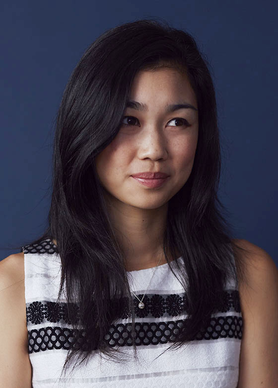
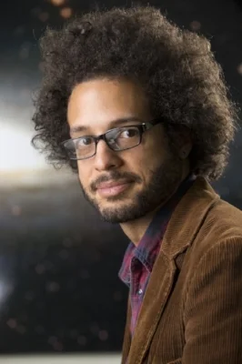

Tracy Chou

Tracy Chou is a software engineer and entrepreneur who uses her technical expertise and personal experiences to advocate for more inclusivity in the tech industry. As a woman of color and daughter of Taiwanese immigrants, she demands accountability, transparency, and systemic change in workplaces historically dominated by men and white leadership.
Despite growing up in Silicon Valley and graduating from Stanford University, Chou faced persistent sexism and microaggressions about her skills. She would often be ignored in meetings or misidentified in non-technical roles simply because of her gender and appearance. She got further harassed after becoming a public advocate for diversity, including enduring online hate, stalking, and attempts to compromise her accounts. Rather than being silenced, Chou sought to create tools to protect and empower marginalized communities in tech.
“Where are the Numbers?” - A call to action that made tech giants disclose their workforce diversity statistics
Chou’s leadership in advancing equity includes co-founding Project Include, a nonprofit providing data-driven strategies for tech companies to improve inclusion; co-founding #MovingForward to encourage venture capital firms to adopt anti-harassment policies; and founding Block Party, a startup designing tools to combat online harassment. Her work reflects a commitment to intersectionality, ensuring that diversity efforts account for overlapping identities of race, gender, class, sexual orientation, and disability rather than focusing narrowly on a single dimension.
By addressing issues like the “Bamboo Ceiling” and harassment against Asian women, Chou highlights how multiple forms of bias can intersect and compound disadvantages. She rejects superficial “diversity theater” and instead focuses on accountability and the creation of safer and more accountable technical environments. Tracy Chou demonstrates that meaningful inclusion in technology requires attention to systems, structures, and lived experience, not just numbers.
Is Your Social Media Safe? with Tracy Chou
Learn More
Brian Nord

Dr. Brian Nord is an astrophysicist and machine learning researcher whose work pushes the tech world to confront the racial and structural inequities embedded in artificial intelligence. At Fermilab and the University of Chicago, he uses AI to study the universe while also challenging the culture of science and technology from within. His work blends technical innovation with a commitment to justice, showing that scientific progress must include the people most often excluded from it.
Nord is a co‑founder of the Deep Skies Lab, a research collective that brings together scientists, engineers, and artists to rethink how AI is developed and who it serves. The lab intentionally rejects traditional hierarchies, instead creating a collaborative environment where early‑career researchers and people of color have space to lead. This model challenges the “lone genius” myth that dominates tech and highlights the importance of community‑centered innovation.
Beyond his scientific work, Nord is a national voice on the social impacts of AI. He writes and speaks about how algorithmic systems can reinforce racial bias, especially when they are built without transparency or diverse perspectives. His advocacy focuses on the emotional and structural barriers faced by Black scientists in predominantly white institutions, pushing universities and tech organizations to rethink their hiring practices, mentorship structures, and research priorities.
Nord’s leadership shows that equity is not separate from technology—it is a core part of building systems that are safe, fair, and accountable. His work continues to influence researchers, policymakers, and students who are shaping the future of AI. By combining scientific expertise with a deep commitment to justice, he offers a model for what responsible tech leadership can look like today.
Learn More
Ada Nduka Oyom

Ada Nduka Oyom is a self taught developer who originally studied microbiology at the University of Nigeria. Stumbling into the tech world on her own, she realized many women hesitate to persue careers in technology. She went on to become lead for the Google developer group chapter in school, which allowed her to network with some of the brightest Nigerian tech Gurus, and this exposed her to unique technical concepts and technologies.
In 2016, Ada Nduka Oyom founded She Code Africa, an organizaton that is paving the way for women in technology and redefining what the tech industry looks like in Africa. She Code Africa focuses on educating young women with the tools and knowlegde to pursue careers in tech, establishing mentorship opportunities, and providing networking events.
Ada Nduka Oyom exemplifies ambition in the tech field as both a woman and a person of color. This instance of intersectionality has informed her choices as a leader in the field, especially through her work in She Code Africa. Ada Nduka Oyom's mission to encourage and inspire African women to pursue careers and skills in technology is truly inspirational, making her an incredible role model in the field.